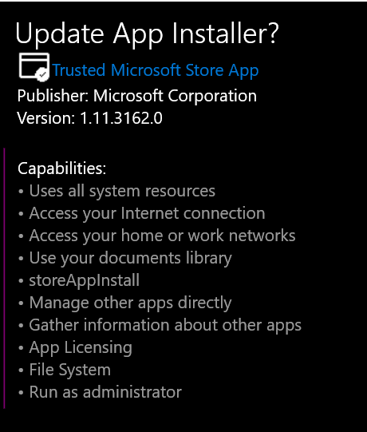

Getting Started with Winget
I tried to use winget to install Github cli but found I don't have it...
> winget install GitHub.cli
winget : The term 'winget' is not recognized as the name of a cmdlet, function, script file, or operable program.
How to get winget?
From May 2020:
Since WinGet is open source, you can clone, build, run, and test the code from the GitHub repository (https://github.com/microsoft/winget-cli).
You can also become a Windows Insider an join the Windows Package Manager Insider program by sending your Microsoft Account (MSA) to winget-feedback@microsoft.com and request to be included in the preview
Ah, but this tip from October 2020 gives extra options...
There are several ways to install the winget tool:
The winget tool is included in the flight or preview version of Windows App Installer. You must install the preview version of App Installer to use winget. To gain early access, submit your request to the Windows Package Manager Insiders Program. Participating in the flight ring will guarantee you see the latest preview updates.
Participate in the Windows Insider flight ring.
Install the Windows Desktop App Installer package located on the Releases page for the winget repository.
— MS Docs: Install winget https://docs.microsoft.com/en-us/windows/package-manager/winget/
So in March 2021 my best option is to go here: https://github.com/microsoft/winget-cli/releases - scroll down to the latest release... download the '.appxbundle' file -- and run that file.
(An .appxbundle file is a UWP program... they're normally installed via the Microsoft Store, but you can also side load them as I'm doing here.)
Looking in the microsoft store, before I install this package, it says I already have "App Installer" from Microsoft Corporation, and that this app allows me to sideload apps. But it says the release date is "15 April 2016"
When I go to install this downloaded bundle file I am asked if I want to "update" the App Installer program...

Now, in a new windows terminal, not running as admin, I attempt to use winget, and I succeed.
winget install GitHub.cli
Here's the output (there was also a permissions prompt)
> winget install GitHub.cli
Found GitHub CLI [GitHub.cli]
This application is licensed to you by its owner.
Microsoft is not responsible for, nor does it grant any licences to, third-party packages.
Downloading https://github.com/cli/cli/releases/download/v1.7.0/gh_1.7.0_windows_amd64.msi
██████████████████████████████ 6.44 MB / 6.44 MB
Successfully verified installer hash
Starting package install...
Successfully installed
How to use winget
And a brief guide to using winget from that same blogpost by Thomas:
Search for available packages:
winget search APPLICATION
Display information about the packages
winget show APPLICATION
Install packages
winget install APPLICATION
Manage sources for packages
winget source (add/list/update/remove/reset)